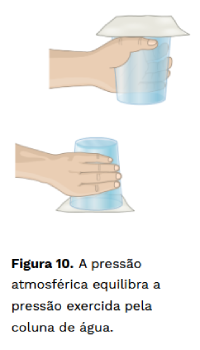

Pressão Atmosférica
A pressão à qual fica sujeito qualquer objeto imerso no ar atmosférico é denominada pressão atmosférica. É importante lembrar que a pressão é uma grandeza física escalar e, como tal, é desprovida de direção e sentido. Assim, para caracterizar completamente a pressão, basta escrever seu valor seguido da respectiva unidade.
Há um experimento bem simples para mostrar que, contrariando o que muitos acreditam, não tem significado dizer que a pressão atmosférica age de cima para baixo só porque é consequência do peso da coluna de ar acima do ponto considerado. Na verdade, os efeitos da pressão se fazem sentir independentemente do sentido considerado. Encha um copo com água até a borda. Coloque sobre ele uma folha de papel não absorvente. Com cuidado, segurando o papel, inverta a posição do copo, mantendo-o com a boca para baixo. Retire a mão e observe que a água não cai. Como explicar esse fenômeno? É que a pressão atmosférica está sustentando a coluna de água, agindo na superfície do papel
